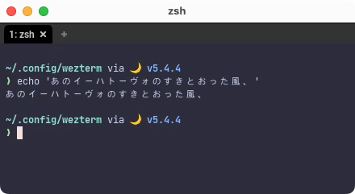
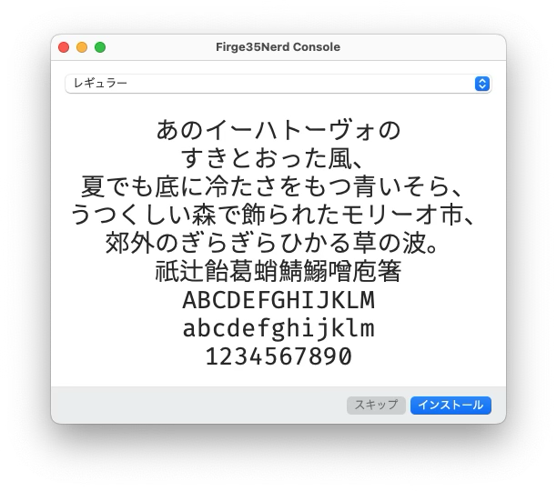
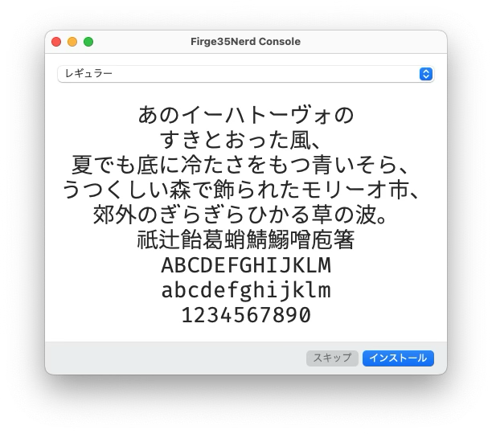

Font
これはもう、ほんとにお好きなフォントを使ってもらえれば良いです。
以下に再掲しますが、starshipを使用する場合もWezTermであればNerd Fontを考慮する必要がありません😆
WezTerm includes Nerd Font Symbols Font as a default font fallback which means that these special symbols are available even without requiring you to use a patched font.
WezTerm は Nerd Font Symbols Font をデフォルトのフォントのフォールバックとして含んでおり、 これはパッチされたフォントを使わなくてもこれらの特殊記号が利用可能であることを意味します。
ただ、環境にもよるかもしれませんが、デフォルトのRobotoだと日本語がイマイチ...😢

なんてことがあるので、次項に続くわけです。
プログラミングフォント Firge (ファージ)
例として、わたしが普段お世話になっているフォントを紹介します。
Fira Mono と源真ゴシックを合成したプログラミングフォント Firge (ファージ)
「ダウンロードはこちら」というリンクから、お言葉に甘えてFirgeNerd_v0.2.0.zipをダウンロードしましょう。感謝❤️
インストール
フォントのインストールは OS の作業になるので、macOSのやり方だけ軽く載せます。
...基本的にはどのOSでも、ダウンロードしてきたファイルを開けば「インストールしますか？」的なの出てきますよね。多分。
やればできる!!
 


ほらできた🤗
WezTerm 設定
で、このフォントをWezTermに設定すれば良さそう。
This function constructs a lua table that corresponds to the internal FontAttributes struct that is used to select a single named font.
この関数は、単一の名前付きフォントを選択するために使用される内部 FontAttributes 構造体に対応する lua テーブルを構築します。
-- 説明簡略のためサンプルとは少し記述を変えてますが、どちらでも構いません。
font = require("wezterm").font("Firge35Nerd Console"),
わたしはFirge35NerdConsole-Regular.ttfをインストールして、WezTermにファミリー名のFirge35Nerd Consoleを指定しています。
フォントサイズも指定できるので一緒に入れておきましょう。
Specifies the size of the font, measured in points.
You may use fractional point sizes, such as 13.3, to fine tune the size.
フォントのサイズをポイント数で指定します。
13.3 のような小数点のサイズを使用して、サイズを微調整することができます。
上の例はデフォルト値そのままですが、お好みで調整してください。